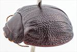
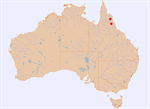

Click on images to enlarge
{kind=link}

Female, Emu Ck, Petford, North Queensland
{kind=link}

Distribution
Name
Trachymela sp. Ta239
Reference specimen
2018-312, Emu Creek, Petford, North Queensland [G. Walker]
Adult Description
Length: ♀ 7.7-7.9 mm [2], ♂ ? mm.
[description based only two female specimens]
Colour: head: dark-brown, clypeal suture black, labrum yellowish-brown, mandibles dark-brown with darker-brown tips; antennomeres 1-5 light brown, 6-11 darker brown; pronotum: dark brown, similar shade as head, with diffuse areas of a fractionally paler shade present; scutellum: black; elytra: dark-brown, similar shade as pronotum, with several sections of interstices on disc that coincide with raised ridges darker or black, humeral callus same as discal colour, a black longitudinal patch extends from just below humeral callus posteriorly to about centre of disc, punctures slighly dark than derm; venter: black, anterior pair of legs slightly paler, inside surface of elytral epipleura black. Cuticular wax: though somewhat disturbed when the specimen was received, the wax seems to have consisted of a relatively uniform and thick layer of pale-brown and whitish wax.
Shape: slightly flattened and relatively broad, greatest height viewed laterally is a little in front of middle of elytral margin; Head; moderately coarsely (pd~2-2.5xef) and quite evenly punctured. Antennae moderate in length (AL ♂=?%BL, ♀=35.8%BL), filiform, interocular distance very large (A-A=19.9%BL). Pronotum; almost evenly curved transversely, its widest point quite close to rear margin; foveal depression broad and shallow with a clearly defined and almost round elevated area in middle, discal area smooth and relatively even, puncturation on disc clearly impressed, puncture size similar to head, slightly more densely distributed anteriorly, slighly unevenly and moderately densely distributed with interspersed much finer punctures, becoming much coarser from level of inner edge of eye to lateral margins, interstices mostly smooth in discal area. Thick front margins join thinner lateral margins in a smoothly rounded right-angle, with lateral margin curving smoothly and gradually towards rear margin, becoming slightly thicker in posterior half. Scutellum; smooth and unpunctured. Elytra; surface mostly evenly curved transversely becoming very slighly explanate near margins, longitudinal curvature almost even throughout, becoming just slighly stronger near apex, post-basal depression barely evident, punctures large and distinct and relatively evenly distributed throughout, verrucae are predominately in the form of long slighly elevated ridges, with VR1 from base to elytral summit, VR2 very slighly elevated from near base to just past summit, VR3 elevated from base to just past summit, with two more longitudinally extended verrucae close to apex, VR4 has an longitudinally extended verruca just just behind base, VR5 in form of a ridge from slighly behind middle to close to apex, VR7 and VR8 with short ridges in posterior third; posterior third of marginal area concave, punctures in marginal area larger than those on disc; surface very slightly discontinuous under humeral callus. Vertical extension of epipleura moderate (HCE/PW=0.36). Venter; Prosternal process broad, parallel-sided, fractionally expanded anteriorly, closed anteriorly, almost devoid of setae, a single seta on anterior and median trochanter; front edge of metasternum beveled, truncate; inner edge of epipleurae lacking setae. Aedeagus; unknown.
Larvae
unknown.
Eggs
unknown.
Similar species
Ta50 – a similar-sized species that occurs in the same area, but differs in its verrucae discrete rather than in the form of continuous ridges.
Notes
This species is known from just two female specimens, one of which was collected from Melaleuca sp. It is rather distinctive, with its verrucae all arranged as long ridges and its exceptionally large interocular distance and very transverse pronotum.
Copyright © 2026. All rights reserved.